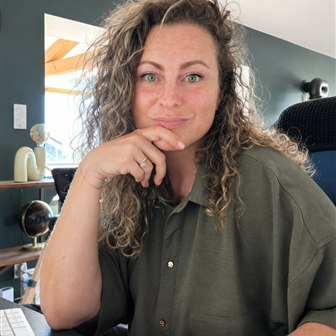

Vous n'êtes pas seul(e) à vous poser ces questions.
Le logiciel de pilotage pour indépendants
Il n'y a qu'une question qui compte.
Est-ce que ça va ?
Vous n'avez plus besoin de vous demander si votre entreprise va bien.
Indépuls vous le montre.
Vous facturez. Vous encaissez. Vous recommencez.
Le doute, lui, ne bouge pas.
Personne ne vous a jamais appris à lire vos propres chiffres.
Vous avancez au feeling.
Et si vous n'aviez qu'une seule chose à regarder ?
Votre activité tourne très bien aujourd'hui.
Zéro boîte noire. Vous voyez toujours le calcul.
Comparaison · TJM réel vs seuil minimum, calculé depuis votre objectif de revenu.
Points pour ce pilier, sur 25 · ≥ 100 % du seuil → 25 pts · ≥ 85 % → 19 pts · ≥ 65 % → 11 pts · < 65 % → 4 pts
La rentabilité est l'un des 4 piliers qui composent votre Score de Santé : chacun vaut 25 points, pour un total sur 100. Les 3 autres sont le remplissage, la trésorerie et l'horizon.

« Indépuls, c'est l'outil que j'aurais aimé avoir, pour moi et pour mon mari artisan. »
Faustine, fondatrice d'Indépuls →Ils l'ont testé avant tout le monde
Tu as conçu un super outil ! Je vais l'utiliser régulièrement sur le temps passé pour mes clients : je manque de visibilité sur mon temps passé, et même sur mon temps improductif.
Ton outil est juste incroyable, je suis archi-fan ! Il est beau, il est clair, et tellement utile. L'essayer, c'est l'adopter.
Franchement, c'est un bel outil ! Facile à prendre en main, joli, et qui donne envie.
Avant de décider, on aimerait savoir. Maintenant, on peut.
Si vous augmentiez vos prix de 12 %, vous gagneriez le même revenu en travaillant 3h de moins chaque semaine.
Ça représente environ 12 heures de plus pour vous, chaque mois.
Indépuls n'est pas un logiciel de facturation.
Indépuls n'est pas un CRM.
Indépuls n'est pas un logiciel de comptabilité.
Indépuls n'est pas fait pour une équipe déjà pilotée.
Indépuls est le seul endroit où vous savez, en une minute, si vous allez bien.
Pas de compte à créer. Pas de carte bancaire.
Juste vous, et vos vrais chiffres, quand vous serez prêt(e).
Vous n'avez plus besoin de deviner.